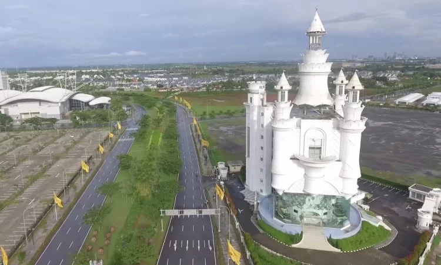
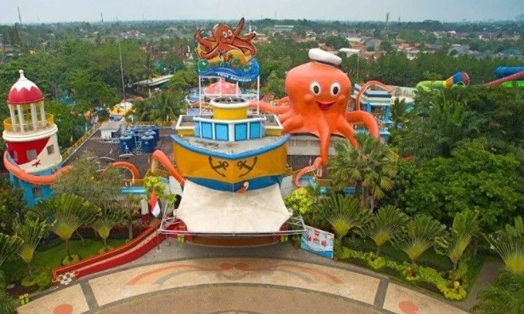
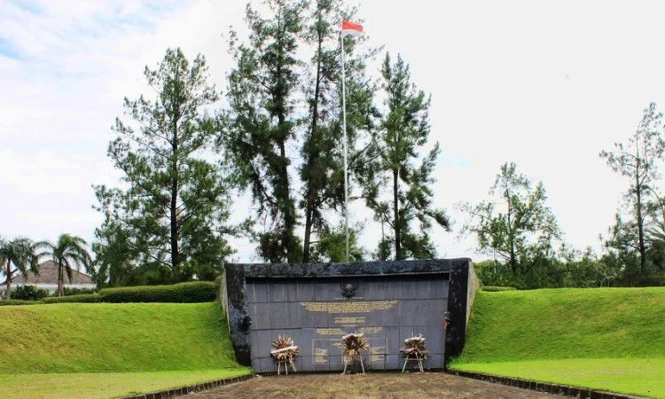

Tourist Places
Froggy Floating Castle

Froggy Floating Castle has its own uniqueness compared to other tourist attractions. This place has a unique building that seems to float in the air with a building height of 58 meters.This tour, which is still included in the BSD City area, is a hits tourist area that must be visited by those of you who like to capture hits. This building has even been recorded in the MURI record as the first floating castle building in the world.
Ocean Park BSD City

If you really like water tourism, then Ocean Park BSD city could be the best destination in South Tangerang. This tourist spot has water rides that are guaranteed to be exciting and very popular among tourists.Ocean Park BSD city has a beach concept decorated with variousornaments so that it has its own charm for visitors. Not only playing water, you can also play flying fox and bungee trampoline which must be very exciting.
Monumen Palagan Lengkong

In addition to natural tourism, you can also visit historical tourist attractions in South Tangerang. The Palagan Lengkong Monument is one of the monuments built to commemorate the struggle of the fighters who have died on the battlefield.This monument area has a cool and beautiful air because it is surrounded by green trees and grass. This condition makes the monument area very suitable to be used as a vacation spot with family.